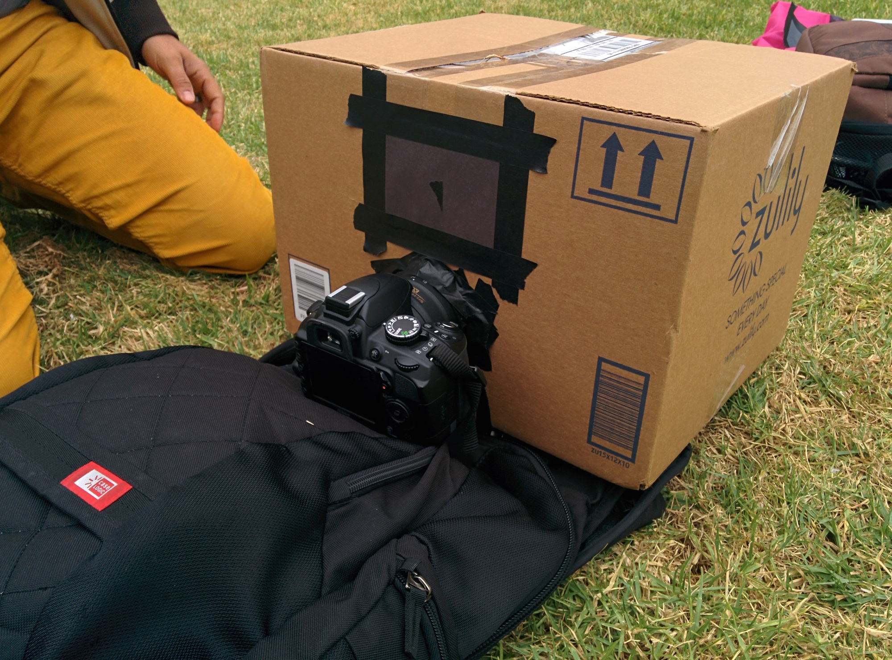

Overview
The project is Building a Pinhole Camera. Our team consists of:
- Iskren Illiev
- Ollie O'Donnell
- Amy ____
Here is a picture of the camera we set up. As you can see there is a removable section of paper for the different pinhole sizes. The box is taped up to prevent any additional light from coming into the box, apart from through the pinhole. The camera is a Nikon D3100 and in we carefully monitored the focus to ensure that any blurring is a result of the aperture of the pinhole, not a blurring effect from the lens of the camera.
{kind=link}
Results
Two Scenes, Three Pinhole Sizes
Larger Versus Smaller Pinholes
As you can see from the images below, the quality of the image changes significantly and consistently with the changing pinhole size.
- At 0.1mm diameter, the image receives very little light. Since the pinhole is so small, the light that does come through travels differently according to its wavelenth - an effect called diffraction. Because different colors of light have different wavelengths, we see a line where the image is not discernible. We believe that is a result of shorter wavelengths diffracting more than the longer (red) wavelengths.
- At 2mm diameter, it appears to be the 'sweet spot'. The image is nicely focused, and there is only a small amount of noise from diffraction. The overall amount of light is enough to work with, allowing a shorter exposure time (depending, of course on the levels of ambient light available, other camera settings, etc.)
- At 5mm diameter, the images have nice coloration, but they are blurry. This is because the light waves have a broad range of angles to cut through, which is not as much the case with a smaller aperture. Diffraction is not a concern here.
{kind=link}
{kind=link}
{kind=link}
{kind=link}
{kind=link}
{kind=link}
Four Other Images
{kind=link}
{kind=link}
{kind=link}
{kind=link}
Bells & Whistles
Tracing Paper
{kind=link}
{kind=link}
Light Painting

Green: (17,59)
Green: (17,40)

Green: (7,52)
3d (Anaglyph) Image
Green: (17,59)
Green: (17,40)
Green: (7,52)